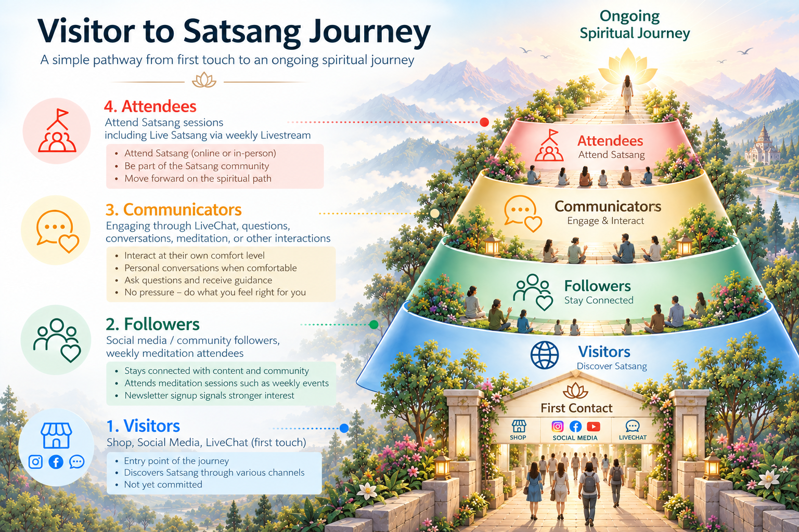

Sample data
— this view is not connected to the live database.
Back to live dashboard
← Back to dashboard
Log a contact
Assign owner
Journey timeline
Satsang & event attendance
Date
Type
Status
Notes
Forms submitted
Form
Submitted
Status
Contact
Seva
Notes
private to owner
O
S
J
R
V
CSMS
Curious Seeker Management System
Global Admin
Regional RS
Satsang Conductor
Event Conductor
Last 30 days
Sample data only
Seeker journey
Needs your attention
today
Seekers to follow up
Seeker
Stage
Last spoken
Reason
Owner
Visitor to Satsang journey
reference pathway
